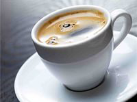
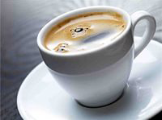

25-60-60")
Кофе Коретто
Неизвестно, кто и когда придумал коретто. Идея согреться и взбодриться, добавив в кофе спиртное, наверняка возникла в те времена, когда Европа только знакомилась с ароматным напитком из кофейных зёрен. В каждой стране эта идея реализована по-своему.
В регионе Венето существует особый вариант кофе коретто – rexentìn (raxentìn). В переводе с местного диалекта это слово означает «ополаскивать». Гостю подают чашку кофе и рюмку граппы или ликёра по выбору. Сперва нужно налить чуть-чуть спиртного в кофе (буквально 5–10 мл), затем сделать один – два глотка. На дне останется немного кофе, его следует по своему вкусу разбавить алкоголем («ополоснуть» чашку). Таким образом, рексентин – это «двойной» коретто: сначала пьют кофе, приправленный спиртным, потом – спиртное, приправленное кофе.

 

В кафе коретто готовят на основе эспрессо, но в домашних условиях можно сварить чёрный кофе любым способом. Кофе в турке даже предпочтительнее, так как именно такой кофе добавляли в коретто до изобретения кофемашин.
Желательно сварить кофейную основу из 100%-й арабики: у неё более благородный аромат. К тому же робуста содержит слишком много кофеина, и если его действие усилить за счёт добавления алкоголя, то организм получит энергетический «удар бичом» по сосудам и нервной системе.
Для приготовления коретто нужна мягкая некипячёная вода без хлора, желательно бутилированная, с минерализацией в диапазоне 75–250 мг/л.